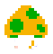

Q
爱
记
加
载
中
.
.
.
l
o
a
d
i
n
g
.
.
.
Q愛记
实时信息 资讯
敬请期待...
导航
中国新闻网
中国新闻_央视网
知识 技能学习
教程
摆钟的工作原理
Adobe PR教学
C盘全面清理教程！彻底清理所有垃圾！
知识概念
Null
实用工具 软件
官方工具
观影院
Lrc歌词制作
简爱
同学录
视频解析
HTML样式生成器（开发中）
[拍摄]证件照
音频转文字（开发中）
音乐解密
[图片类]ICO制作
[图片类]图片压缩
二维码/条码
[文本类]中文简体繁体转换
站外导航
Redpanda 视频压缩
Video Trimmer - 视频音频等文件在线编辑器
剪映官网
在线工具-你的工具箱
Gitee
GitHub
知乎
163邮箱
QQ邮箱
元岛
白猫在线识别
腾讯文档
CCTV央视网
CSDN
微工具
爱奇艺
酷狗音乐
微信网页版
微信文件传输助手网页版
有道翻译
Shodan
百度
优酷
菜鸟教程
 小霸王游戏机
哔哩哔哩
w3C
emoji合成
玩游戏学Flex
Adobe
PhotoShop
1.0 (1990)
2.5 (1992)
3.0 (1994)
4.0 (1996)
5.0 (1998)
6.0 (2000)
7.0 (2002)
CS (2003)
CS2 (2005)
CS3 (2007)
CS4 (2008)
CS5 (2010)
CS6 (2012)
CC 2014
CC 2015
CC 2016
CC 2017
CC 2018
CC 2019
2020
2021
2022
2023
2024 Ai
Creative Cloud
软件素材 文件
1
导航
1
2
搜索关键词
X
Q爱记
秒针声音：关(默认)
忍一时风平浪静、退一步越想越气
18
:
00
00
2022-10-04 星期二
√
扫榻相迎
设备访问次数：
雅乐
宿敌_田人
播放列表
?/
播放 暂停
.<
下一首
,>
上一首
←
后退5秒
→
前进5秒
《
雅言